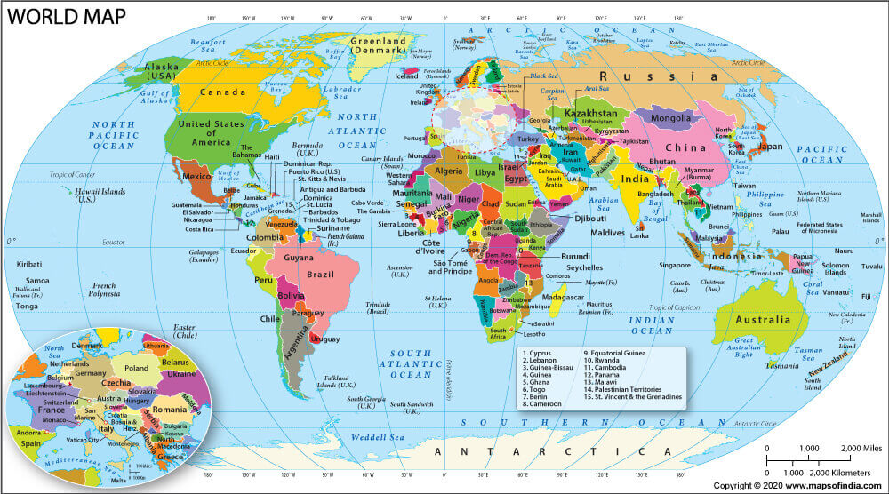

Welcome to World Map Explorer, your gateway to discovering different countries around the world. Explore their rich history, fascinating cultures, famous monuments, and beautiful destinations. Click on a country on the map or select a country below to learn more.
Click on India, China, or Australia on the map to explore the country.

India is a country in South Asia known for its ancient civilisation, diverse cultures, traditions, languages, festivals, and natural beauty. It is home to the Himalayas, historic cities, magnificent temples, and world-famous monuments.
The capital of India is New Delhi. It is the political and administrative centre of the country.
India has one of the world's oldest civilisations. The Indus Valley Civilisation flourished thousands of years ago. Later, powerful kingdoms and empires, including the Maurya, Gupta, and Mughal Empires, shaped the country's history. India came under British colonial rule before gaining independence on 15 August 1947. On 26 January 1950, India became a republic when its Constitution came into effect.
Learn more: Explore the history of India
China is a country in East Asia known for its ancient civilisation, rich cultural heritage, traditional arts, technological development, and remarkable architecture. It is home to spectacular landscapes, historic cities, and some of the world's most famous landmarks.
The capital of China is Beijing. It is an important political, cultural, and historical centre.
China has a long history spanning thousands of years. Early Chinese civilisation developed along major river systems, including the Yellow River. Several dynasties, such as the Qin, Han, Tang, Ming, and Qing, influenced Chinese culture and government. The Qin dynasty unified much of China in 221 BCE. In 1949, the People's Republic of China was established.
Learn more: Explore the history of China
Australia is a country and continent in the Southern Hemisphere. It is famous for its unique wildlife, beautiful beaches, vast deserts, modern cities, and extraordinary natural landscapes. Australia's Aboriginal and Torres Strait Islander peoples have rich cultures and histories extending back tens of thousands of years.
The capital of Australia is Canberra. It is the centre of the country's federal government.
Australia's Indigenous peoples have lived on the continent for at least 65,000 years. British colonisation began in 1788. The six British colonies eventually united to form the Commonwealth of Australia on 1 January 1901. Today, Australia is a modern parliamentary democracy with a multicultural society and a distinctive natural heritage.
Learn more: Explore the history of Australia
Every country has a unique story, culture, and heritage. Through World Map Explorer, we can learn about the history of different nations, discover their capitals, and appreciate the monuments that represent their past. Continue exploring the world and discovering new places!